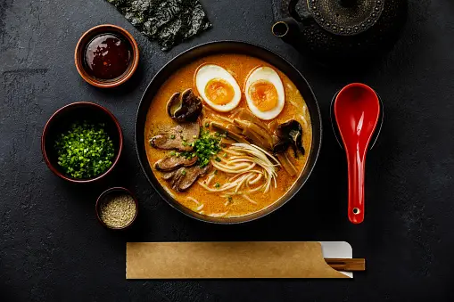

Ramen recipe

Ingrediants
- Ramen noodles
- Garlic and ginger
- Broth(chicken or veg)
- extra veggies like carrots
- dried shiitake mushrooms
- your favourite
Now, let him cook
- Stir-Fry Aromatics: Garlic and ginger, what a delicious duo. This is where the flavor is, friends.
- Make Your (Easy!) Broth: Add some chicken broth and dried shiitake mushrooms for some umami punch.
- Add Noodles: Cook your noodles right in the broth with some scallions (more flavor, please!).
- Add Veg: Thinly sliced kale, shredded carrots, whatever you’d like! Cook until just tender.
- Top It Off: Add some crunchy panko crumbs, a soft-boiled egg, chili oil, hot sauce, sesame oil, and/or soy sauce, whatever your heart desires.